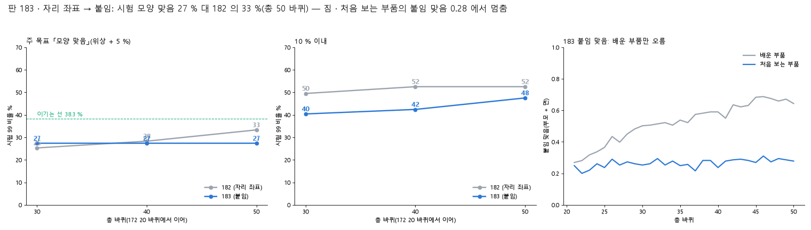

실험 m2_tr0183_h000_붙임
183 붙임 — 몸 자리를 좌표 대신 「어느 몸의 어느 면」으로 고르면 모양이 맞아지나 (11-10 · 모델183.py · 손으로 정리)
분석
한 줄로
물음: 182 에서 자리 숫자는 학습량으로 안 정밀해졌고, 고르기(종류 · 축)는 배운 부품에서 거의 다 맞혔다. 자리를 고르기로 바꾸면 모양이 맞아지나?
답: 아니다. 같은 학습량(총 50 바퀴)에서 처음 보는 시험의 「모양 맞음」은 183 27.3 % · 182 33.3 % 로 졌다. 붙임이 맞은 부품은 더 정확했지만(어긋남 2.1 % 대 2.8 %), 처음 보는 부품의 붙임 맞음이 0.28 에서 멈춰 틀린 몸이 통째로 엉뚱한 곳에 놓였다.
왜 이 판을 했나
tr182 에서 몸의 40 % 가 배운 부품에서도 자리 3 % 넘게 어긋났다. 정답 생성기는 자리를 「몸 A 의 +z 면에 반쯤 박는다」는 붙임 규칙으로 정한다. 붙임으로 적으면 숫자 대신 고르기가 되고, 사람이나 LLM 이 코드를 고칠 때 붙은 몸이 따라온다. 11-10 사용자 결정으로 주 목표는 「모양 맞음」(위상 + 표면 5 %) · 3 % 는 보조.
바꾼 것 하나
출력 칸에서 몸 자리 좌표를 붙임(부모 칸 7 · 면 6)으로 바꿨다. 자리 숫자는 뿌리 몸만 쓴다. 짓기는 자식 가운데 = 부모 가운데 + 면 방향 × (부모 반폭 + 자기 반폭 × 0.6)(생성기와 같은 식). 나머지는 172 와 같다(172 20 바퀴 무게에서 이어 30 바퀴).
결과

| 시험 99 · 총 바퀴 | 30 | 40 | 50 | 이기는 선 |
|---|---|---|---|---|
| 183 모양 맞음(5 %) | 27.3 | 27.3 | 27.3 | ≥ 38.3 |
| 182 모양 맞음(5 %) | 25.3 | 28.3 | 33.3 | |
| 183 정밀(3 %) | 15.2 | 17.2 | 16.2 | |
| 183 10 % 이내 | 40.4 | 42.4 | 47.5 | (182 50: 52.5) |
| 183 어긋남 가운데 % | 13.2 | 10.7 | 8.8 | (182 50: 7.1) |
관문(학습 전): 정답 붙임으로 지으면 「같다」 3 % 시험 100 % · 학습 98 % — 짓기 식은 맞다.
왜 이렇게 나왔나
확인한 것
- 붙임 맞음(부모와 면 둘 다): 배운 부품 0.27 → 0.64 · 처음 보는 부품 0.25 → 0.28. 배운 부품만 올랐다.
- 10 바퀴에 나눠 보니 처음 보는 부품에서 부모 맞음 0.38 · 면 맞음 0.57(면의 축만 보면 0.74 — 위인지 아래인지를 헷갈림) · 15 % 는 부모를 「뿌리」로 골라 붙지 않음.
- 정답 붙임이 모호하지는 않다: 시험의 붙는 몸 245 중 다른 (부모 · 면)으로 같은 자리가 나오는 몸은 1 개(0.4 %).
- 그림 격자에서 붙임이 맞은 부품은 182 보다 정확하고(12020 2.1 % 대 2.8 % · 12009 6.3 % 대 10.0 %), 틀린 부품은 크게 틀린다(12089 반구가 떨어져 54.9 % 대 14.9 %).
짐작 (아직 확인 안 함)
- 부모를 「칸 번호」로 가리키는데 칸 순서가 흔들려(182 에서 칸 바뀜 시험 56 %) 부모 번호도 흔들린다.
한계
- 시험 99 · 한 부품 = 1 %p. 시드 하나.
- 30 바퀴만(총 50). 붙임 칸은 처음부터 배우는 칸이라 더 돌리면 달라질 수 있다 — 다만 처음 보는 부품의 붙임 맞음은 30 바퀴 내내 평평했다.
배운 것과 다음
붙임은 맞으면 더 정확하고 고치기 쉽지만, 처음 보는 그림에서 부모 몸을 못 고른다.
- 틀릴 때 크게 틀리는 것은 고치기에는 유리하다(한 단어 고침 · 확률 상위 후보를 지어 입력 그림과 맞대 고르기) — 실제 파이프라인에서 쓸 수 있다.
- 부모를 칸 번호 대신 칸 순서와 무관하게 가리키는 방법(예: 종류 + 크기 순)은 남은 손잡이.
- 11-10 사용자 결정: 3면도 → CAD 줄기는 183 까지 · 다음은 실제 이미지 입력부터 파이프라인.